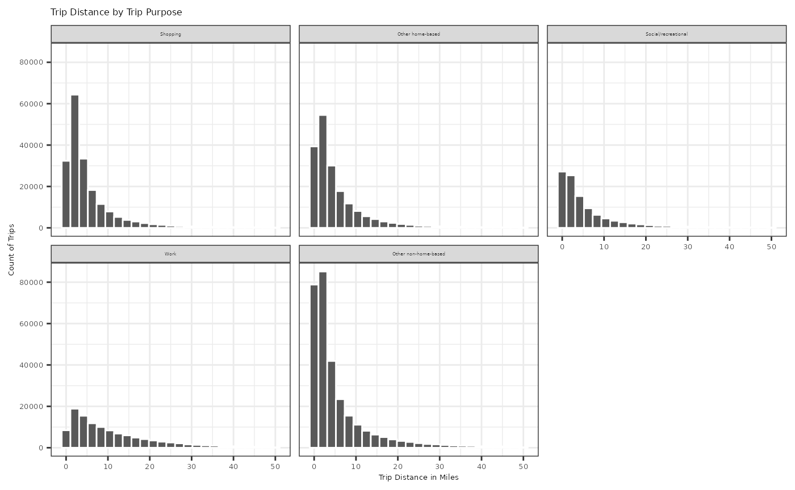
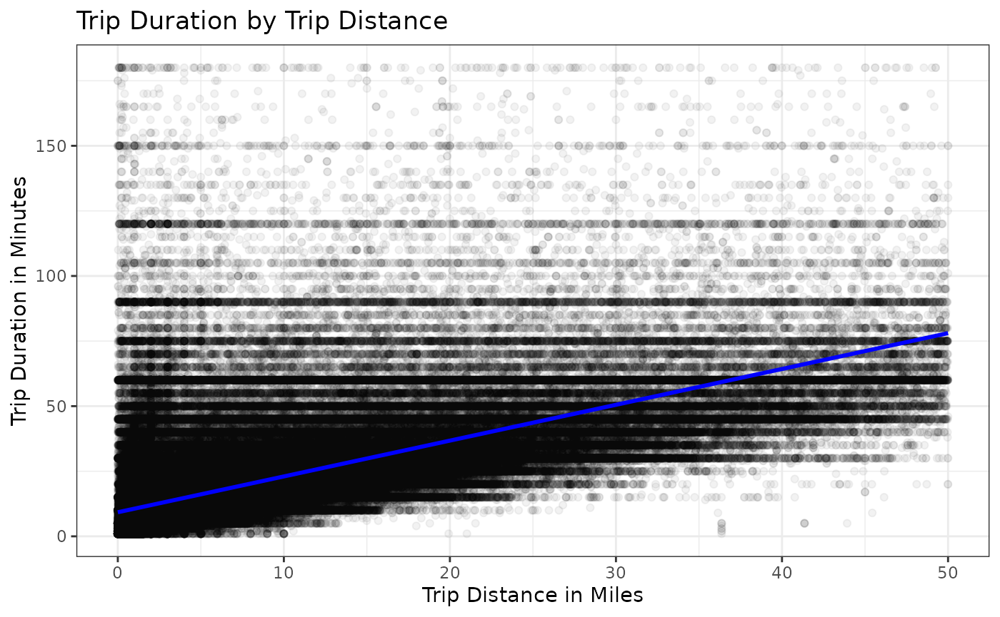
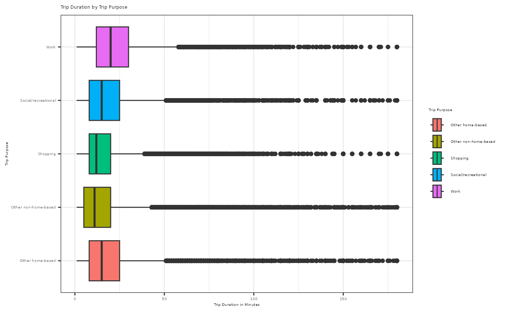

Exploratory Data Analysis and Intro Statistics Example
This example uses the trip dataset to explore the
relationships between trip distance, trip duration, and trip purpose.
Among those, you will see an intro statistics example using one
quantitative explanatory variable (trip distance) and one quantitative
outcome variable (trip duration).
#> Filtered to shorter trips for a clearer introductory visualization
short_trips <- trip |>
filter(trip_miles <= 50,
trip_duration <= 180)
#> Create readable labels for trip purpose
short_trips <- short_trips |>
mutate(
trip_purpose_label = case_when(
trip_purpose == "shopping_trip" ~ "Shopping",
trip_purpose == "other_home_based_trip" ~ "Other home-based",
trip_purpose == "social_recreational_trip" ~ "Social/recreational",
trip_purpose == "work_trip" ~ "Work",
trip_purpose == "other_non_home_based_trip" ~ "Other non-home-based"
)
)
#> Sort facet_wrap labels
short_trips$trip_purpose_sort_val <- factor(short_trips$trip_purpose_label, levels = c("Shopping", "Other home-based", "Social/recreational", "Work", "Other non-home-based"))
#> Plot Trip Distance by Trip Purpose
ggplot(data = short_trips,
aes(x = trip_miles)) +
geom_histogram(bins = 25, color = "white") +
facet_wrap(~trip_purpose_sort_val) +
labs(title = "Trip Distance by Trip Purpose",
x = "Trip Distance in Miles",
y = "Count of Trips") +
theme_bw() +
theme(strip.text = element_text(size = 3),
axis.text = element_text(size = 5),
axis.title = element_text(size = 5),
title = element_text(size = 5))
#> Summary statistics of trip miles and duration by trip purpose
short_trips |>
group_by(trip_purpose_label) |>
summarize(
trips = n(),
mean_miles = mean(trip_miles),
median_miles = median(trip_miles),
mean_duration = mean(trip_duration),
median_duration = median(trip_duration)
) |>
arrange(desc(mean_miles))
#> # A tibble: 5 × 6
#> trip_purpose_label trips mean_miles median_miles mean_duration
#> <chr> <int> <dbl> <dbl> <dbl>
#> 1 Work 114300 10.9 7.79 24.9
#> 2 Social/recreational 105614 6.26 3.16 18.1
#> 3 Other non-home-based 298604 5.63 2.64 16.3
#> 4 Other home-based 186183 5.61 3.08 18.6
#> 5 Shopping 191227 5.49 3.08 15.7
#> # ℹ 1 more variable: median_duration <dbl>
#> Filtered to trips with positive distance and duration
positive_distance_trips <- short_trips |>
filter(trip_miles > 0,
trip_duration > 0)
#> Plot trip duration by trip distance
ggplot(data = positive_distance_trips,
aes(x = trip_miles,
y = trip_duration)) +
geom_point(alpha = 0.05) +
geom_smooth(method = lm, se = FALSE, formula = y ~ x, color = "blue") +
labs(title = "Trip Duration by Trip Distance",
x = "Trip Distance in Miles",
y = "Trip Duration in Minutes") +
theme_bw()
#> Fit a simple linear regression model
duration_miles_model <- lm(trip_duration ~ trip_miles,
data = positive_distance_trips)
summary(duration_miles_model)
#>
#> Call:
#> lm(formula = trip_duration ~ trip_miles, data = positive_distance_trips)
#>
#> Residuals:
#> Min 1Q Median 3Q Max
#> -64.672 -5.892 -2.528 2.311 170.685
#>
#> Coefficients:
#> Estimate Std. Error t value Pr(>|t|)
#> (Intercept) 9.246083 0.015902 581.4 <2e-16 ***
#> trip_miles 1.375717 0.001552 886.2 <2e-16 ***
#> ---
#> Signif. codes: 0 '***' 0.001 '**' 0.01 '*' 0.05 '.' 0.1 ' ' 1
#>
#> Residual standard error: 11.81 on 895437 degrees of freedom
#> Multiple R-squared: 0.4673, Adjusted R-squared: 0.4673
#> F-statistic: 7.854e+05 on 1 and 895437 DF, p-value: < 2.2e-16
#> Correlation between trip distance and trip duration
cor(positive_distance_trips$trip_miles, positive_distance_trips$trip_duration)
#> [1] 0.6835766
#> The slope estimates the average change in trip duration for one additional
#> mile of trip distance.
coef(duration_miles_model)["trip_miles"]
#> trip_miles
#> 1.375717
#> Plot Trip Duration by Trip Purpose
ggplot(data = positive_distance_trips,
aes(x = trip_duration,
y = trip_purpose_label,
fill = trip_purpose_label)) +
geom_boxplot() +
labs(title = "Trip Duration by Trip Purpose",
fill = "Trip Purpose",
x = "Trip Duration in Minutes",
y = "Trip Purpose") +
theme_bw() +
theme(axis.text = element_text(size = 4),
axis.title = element_text(size = 4),
title = element_text(size = 4),
legend.text = element_text(size = 4),
legend.title = element_text(size = 4))
#> Test whether average trip distance differs by trip purpose
trip_purpose_model <- lm(trip_miles ~ trip_purpose_label,
data = positive_distance_trips)
anova(trip_purpose_model)
#> Analysis of Variance Table
#>
#> Response: trip_miles
#> Df Sum Sq Mean Sq F value Pr(>F)
#> trip_purpose_label 4 2792300 698075 11342 < 2.2e-16 ***
#> Residuals 895434 55109862 62
#> ---
#> Signif. codes: 0 '***' 0.001 '**' 0.01 '*' 0.05 '.' 0.1 ' ' 1